Gradient Descent
The optimiser. This is how a neural network actually learns — by rolling downhill on the loss landscape, one small step at a time. Derivatives → gradients → the update rule → learning rate → SGD, momentum, Adam → why local minima are less scary than they sound.
01 The optimisation view of learning
The reframe
Every learning problem in this course becomes an optimisation problem:
- L(\theta) is the loss function, averaged over the training set.
- \theta is every trainable parameter — every weight and bias in every layer.
- We want the \theta that makes L smallest.
For anything but toy models, we can't solve this in closed form. So we search — moving \theta downhill, step by step. That search algorithm is gradient descent.
02 Prerequisite — derivatives and gradients
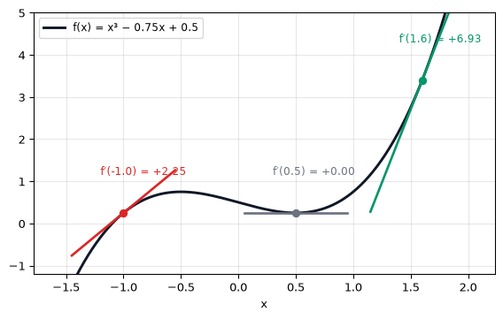
Python code for this figure
import numpy as np
import matplotlib.pyplot as plt
f = lambda x: x ** 3 - 0.75 * x + 0.5 + 0.0 * x
df = lambda x: 3 * x ** 2 - 0.75
x = np.linspace(-1.6, 1.9, 300)
fig, ax = plt.subplots(figsize=(7, 4))
ax.plot(x, f(x), color="#111827", lw=2.2, label="f(x) = x³ − 0.75x + 0.5")
for x0, c in [(-1.0, "#dc2626"), (0.5, "#6b7280"), (1.6, "#059669")]:
xs = np.linspace(x0 - 0.45, x0 + 0.45, 2)
ax.plot(xs, f(x0) + df(x0) * (xs - x0), color=c, lw=2)
ax.scatter([x0], [f(x0)], color=c, zorder=3)
ax.annotate(f"f′({x0}) = {df(x0):+.2f}", (x0, f(x0)), (x0 - 0.2, f(x0) + 0.9), color=c, fontsize=9)
ax.set_ylim(-1.2, 5); ax.grid(alpha=0.3); ax.legend(fontsize=9, loc="upper left"); ax.set_xlabel("x")
plt.show()Derivative in one variable
For a scalar function f: \mathbb{R} \to \mathbb{R}:
Interpretation — the slope of the tangent line at x. Positive slope → function is going up; negative → going down; zero → flat spot.
Gradient in many variables
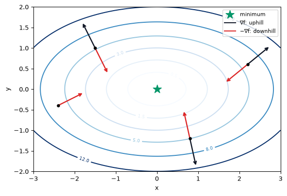
Python code for this figure
import numpy as np
import matplotlib.pyplot as plt
f = lambda x, y: x ** 2 + 3 * y ** 2
grad = lambda x, y: np.array([2 * x, 6 * y])
X, Y = np.meshgrid(np.linspace(-3, 3, 200), np.linspace(-2, 2, 200))
fig, ax = plt.subplots(figsize=(7, 4.6))
cs = ax.contour(X, Y, f(X, Y), levels=[0.5, 1.5, 3, 5, 8, 12], cmap="Blues")
ax.clabel(cs, fontsize=7)
for (x0, y0) in [(2.2, 0.6), (-1.5, 1.0), (0.8, -1.2), (-2.4, -0.4)]:
g = grad(x0, y0) / np.linalg.norm(grad(x0, y0)) * 0.7
ax.annotate("", (x0 + g[0], y0 + g[1]), (x0, y0), arrowprops=dict(arrowstyle="->", lw=1.8, color="#111827"))
ax.annotate("", (x0 - g[0], y0 - g[1]), (x0, y0), arrowprops=dict(arrowstyle="->", lw=1.8, color="#dc2626"))
ax.scatter([x0], [y0], color="k", s=15, zorder=3)
ax.scatter([0], [0], marker="*", s=180, color="#059669", zorder=3, label="minimum")
ax.plot([], [], color="#111827", label="∇f: uphill"); ax.plot([], [], color="#dc2626", label="−∇f: downhill")
ax.set_aspect("equal"); ax.legend(fontsize=8.5, loc="upper right"); ax.set_xlabel("x"); ax.set_ylabel("y")
plt.show()For a function f: \mathbb{R}^n \to \mathbb{R}, the gradient is the vector of partial derivatives:
Two key facts:
- \nabla f(\mathbf{x}) points in the direction of steepest ascent.
- -\nabla f(\mathbf{x}) points in the direction of steepest descent — which is what we want to minimise.
The intuition picture
Stand on a mountain in fog. Feel the slope with your feet. Take a small step in the steepest-downhill direction. Repeat until flat. That's gradient descent.
03 The single-variable update rule
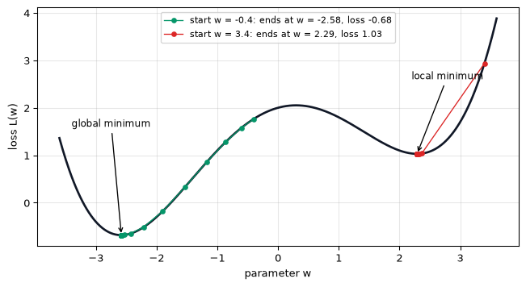
Python code for this figure
import numpy as np
import matplotlib.pyplot as plt
L = lambda w: 0.05 * w ** 4 - 0.6 * w ** 2 + 0.35 * w + 2
dL = lambda w: 0.2 * w ** 3 - 1.2 * w + 0.35
w = np.linspace(-3.6, 3.6, 400)
fig, ax = plt.subplots(figsize=(8, 4))
ax.plot(w, L(w), color="#111827", lw=2)
for w0, c in [(-0.4, "#059669"), (3.4, "#dc2626")]:
path = [w0]
for _ in range(25):
path.append(path[-1] - 0.25 * dL(path[-1]))
path = np.array(path)
ax.plot(path, L(path), "o-", color=c, ms=4, lw=1, label=f"start w = {w0}: ends at w = {path[-1]:.2f}, loss {L(path[-1]):.2f}")
ax.annotate("global minimum", (-2.58, L(-2.58)), (-3.4, 1.6), arrowprops=dict(arrowstyle="->"), fontsize=9)
ax.annotate("local minimum", (2.29, L(2.29)), (2.2, 2.6), arrowprops=dict(arrowstyle="->"), fontsize=9)
ax.set_xlabel("parameter w"); ax.set_ylabel("loss L(w)"); ax.legend(fontsize=8.5, loc="upper center"); ax.grid(alpha=0.3)
plt.show()The rule
At each step, update the parameter by taking the current gradient and moving against it:
The scalar \eta > 0 is the learning rate — how big a step to take.
Worked example
Minimise L(\theta) = (\theta - 3)^2. Gradient: L'(\theta) = 2(\theta - 3).
Start at \theta_0 = 0, \eta = 0.1:
| Step | \theta | L(\theta) | L'(\theta) | update |
|---|---|---|---|---|
| 0 | 0.0 | 9.00 | -6.0 | +0.6 |
| 1 | 0.6 | 5.76 | -4.8 | +0.48 |
| 2 | 1.08 | 3.69 | -3.84 | +0.384 |
| 3 | 1.464 | 2.36 | -3.07 | +0.307 |
| ... | ... | ... | ... | ... |
| ∞ | → 3.0 | 0.0 | 0.0 | 0 |
Exponential decay to the true minimum. That's what convergence looks like when things go well.
Generalising to many parameters
Same rule, one gradient component per parameter:
or in vector form:
For an MLP, \boldsymbol{\theta} contains every weight and bias flattened into one vector. Backpropagation (note 07) is how we compute \nabla L.
04 The learning rate — the most important hyperparameter
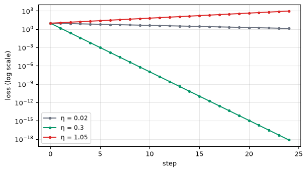
Python code for this figure
import numpy as np
import matplotlib.pyplot as plt
fig, ax = plt.subplots(figsize=(7, 3.8))
for lr, c in [(0.02, "#6b7280"), (0.3, "#059669"), (1.05, "#dc2626")]:
th, losses = 0.0, []
for _ in range(25):
losses.append((th - 3) ** 2); th -= lr * 2 * (th - 3)
ax.plot(losses, "o-", ms=3, color=c, label=f"η = {lr}")
ax.set_yscale("log"); ax.set_xlabel("step"); ax.set_ylabel("loss (log scale)"); ax.legend(fontsize=9); ax.grid(alpha=0.3)
plt.show()What can go wrong
- Too small — takes forever. Also easy to get stuck in a very flat region.
- Too big — overshoots the minimum. Loss bounces around or explodes.
- Just right — converges smoothly in reasonable time.
There is no universal "correct" value. It depends on the loss landscape, model size, data scale, and choice of optimiser.
Typical starting values
| Optimiser | Sensible LR |
|---|---|
| Plain SGD | 0.01 - 0.1 |
| SGD + momentum | 0.01 - 0.1 |
| Adam | 1e-4 - 1e-3 |
| AdamW (transformers) | 1e-5 - 5e-4 |
Start with the default, watch the loss curve, halve if it explodes, double if it plods.
Instead of a fixed rate you can also change it during training: that is a schedule, the last section of this note.
05 Convex vs non-convex loss landscapes
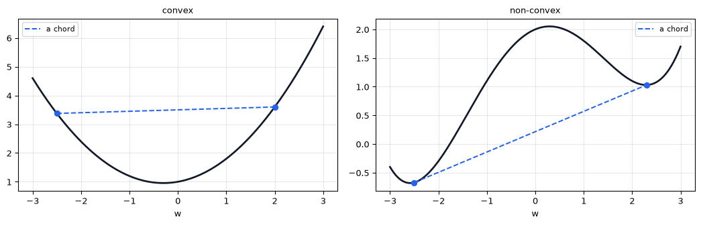
Python code for this figure
import numpy as np
import matplotlib.pyplot as plt
w = np.linspace(-3, 3, 300)
fig, axes = plt.subplots(1, 2, figsize=(11, 3.6))
conv = lambda w: 0.5 * w ** 2 + 0.3 * w + 1
nonc = lambda w: 0.05 * w ** 4 - 0.6 * w ** 2 + 0.35 * w + 2
for ax, f, name, (a, b) in [(axes[0], conv, "convex", (-2.5, 2.0)), (axes[1], nonc, "non-convex", (-2.5, 2.3))]:
ax.plot(w, f(w), color="#111827", lw=2)
ax.plot([a, b], [f(a), f(b)], "--", color="#2563eb", lw=1.5, label="a chord")
ax.scatter([a, b], [f(a), f(b)], color="#2563eb", zorder=3)
ax.set_title(name, fontsize=10); ax.grid(alpha=0.3); ax.legend(fontsize=8.5); ax.set_xlabel("w")
plt.tight_layout(); plt.show()Convex — the theory-friendly case
A convex function has a single global minimum and no local minima. Any line segment between two points on the graph stays above the graph. Linear regression, logistic regression, SVMs all have convex losses.
For convex losses, gradient descent (with a decent learning rate) is guaranteed to reach the global minimum.
Non-convex — every deep network
Deep networks have loss landscapes with:
- Many local minima.
- Long flat valleys.
- Sharp cliffs.
- Saddle points everywhere (next section).
Gradient descent has no convergence guarantee here — you can get stuck. But empirically, it works remarkably well.
Why does it work despite being non-convex?
Three empirical observations from the last decade:
- Most local minima are almost as good as the global one. In high dimensions, "bad" local minima are rare.
- The stochastic noise in SGD helps escape shallow minima and saddle points.
- Over-parameterised networks (more params than data) have surprisingly gentle loss landscapes.
Nobody has a full theory, but the empirical evidence is overwhelming.
06 Saddle points — the real enemy
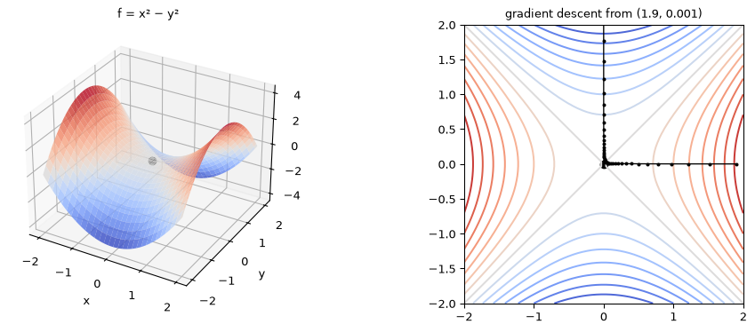
Python code for this figure
import numpy as np
import matplotlib.pyplot as plt
X, Y = np.meshgrid(np.linspace(-2, 2, 60), np.linspace(-2, 2, 60))
Z = X ** 2 - Y ** 2
fig = plt.figure(figsize=(11, 4))
ax = fig.add_subplot(1, 2, 1, projection="3d")
ax.plot_surface(X, Y, Z, cmap="coolwarm", alpha=0.85, linewidth=0)
ax.scatter([0], [0], [0], color="k", s=40); ax.set_xlabel("x"); ax.set_ylabel("y"); ax.set_title("f = x² − y²", fontsize=10)
ax2 = fig.add_subplot(1, 2, 2)
ax2.contour(X, Y, Z, levels=15, cmap="coolwarm")
p = np.array([1.9, 1e-3]); path = [p.copy()]
for _ in range(60):
p = p - 0.1 * np.array([2 * p[0], -2 * p[1]]); path.append(p.copy())
path = np.array(path)
ax2.plot(path[:, 0], path[:, 1], "k.-", ms=4, lw=1)
ax2.scatter([0], [0], color="k", s=40); ax2.set_aspect("equal"); ax2.set_title("gradient descent from (1.9, 0.001)", fontsize=10)
ax2.set_xlim(-2, 2); ax2.set_ylim(-2, 2)
plt.tight_layout(); plt.show()What they are
A saddle point is a point where the gradient is zero but the function isn't at a minimum. Along one axis it curves up; along another it curves down.
In high dimensions saddle points massively outnumber local minima. That's the actual optimisation challenge in deep learning — not local minima but saddles that trap gradient descent for many steps.
Why they're worse than local minima
At a saddle point, the gradient is (nearly) zero — so gradient descent barely moves. But you're not at a good solution; you're stuck on a plateau.
Local minima at least have "you found something". Saddle points give you a false sense of convergence.
The fix
- Momentum (below) — keeps moving in a direction that's been helpful, coasting through flat regions.
- Adaptive optimisers (Adam) — adjust step size per parameter, so directions with tiny gradients still get moved.
- Stochastic noise — mini-batch gradients aren't the true gradient; the noise perturbs you off saddles.
07 Batch, mini-batch, stochastic
Batch (Full) Gradient Descent
Use all training examples to compute the gradient before each update.
- Very accurate gradient — smooth trajectory.
- Very expensive — one step requires a full pass through the dataset.
- Deterministic — same trajectory every time.
Rarely used for anything but small datasets or theoretical analysis.
Stochastic Gradient Descent (SGD)
One example at a time. Update after every sample.
- Very cheap per step.
- Very noisy gradient — trajectory zig-zags around.
- Noise can help — pushes past saddle points and shallow minima.
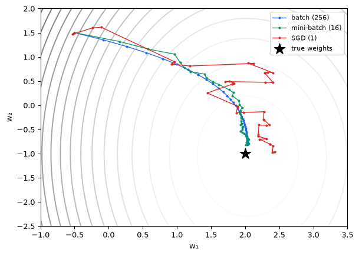
Python code for this figure
import numpy as np
import matplotlib.pyplot as plt
rng = np.random.default_rng(0)
n = 256; Xd = rng.normal(size=(n, 2)) * [1.0, 0.6]; w_true = np.array([2.0, -1.0])
yd = Xd @ w_true + rng.normal(0, 0.5, n)
loss = lambda W: np.mean((Xd @ W - yd) ** 2)
fig, ax = plt.subplots(figsize=(7, 5))
A, B = np.meshgrid(np.linspace(-1, 3.5, 120), np.linspace(-2.5, 2, 120))
Z = np.array([[loss(np.array([a, b])) for a in A[0]] for b in B[:, 0]])
ax.contour(A, B, Z, levels=20, cmap="Greys", alpha=0.6)
for bs, c, name in [(n, "#2563eb", "batch (256)"), (16, "#059669", "mini-batch (16)"), (1, "#dc2626", "SGD (1)")]:
w = np.array([-0.5, 1.5]); path = [w.copy()]
for step in range(40):
idx = rng.choice(n, bs, replace=False)
g = 2 * Xd[idx].T @ (Xd[idx] @ w - yd[idx]) / bs
w = w - 0.08 * g; path.append(w.copy())
path = np.array(path); ax.plot(path[:, 0], path[:, 1], ".-", color=c, ms=4, lw=1, label=name)
ax.scatter(*w_true, marker="*", s=200, color="k", zorder=3, label="true weights")
ax.set_xlabel("w₁"); ax.set_ylabel("w₂"); ax.legend(fontsize=8.5)
plt.show()Mini-batch GD — the practical default
A small batch (32, 64, 128, ...) between the two extremes.
- Reasonable gradient estimate.
- Efficient on GPU (matrix multiplies over a batch are fast).
- Noise level is a tunable knob (smaller batch = noisier).
Standard practice today. When someone says "SGD", they usually mean mini-batch SGD.
How many "steps" per epoch
- Batch GD — 1 update per epoch.
- SGD — N updates per epoch (N = dataset size).
- Mini-batch — N / B updates per epoch (B = batch size).
An epoch is one pass through the training set; how many update steps that entails depends on the batch size.
The three side by side
| Batch GD | Stochastic GD | Mini-batch GD | |
|---|---|---|---|
| Data per update | the whole training set | one example | a mini-batch (e.g. 32–256) |
| Updates per epoch | 1 | N | N / B |
| Path | smooth, stable | noisy, erratic | fairly smooth |
| Cost per update | high | very low | moderate, and fast on a GPU |
| Memory | high | low | moderate |
Mini-batch is the default for nearly all deep learning: close to the stability of batch GD, close to the speed of SGD, and a batch is exactly the shape a GPU is good at.
08 Momentum, RMSProp, Adam
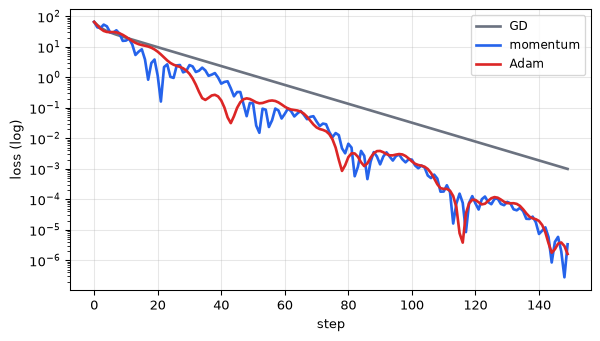
Python code for this figure
import numpy as np
import matplotlib.pyplot as plt
f = lambda p: 0.5 * p[0] ** 2 + 25 * p[1] ** 2
g = lambda p: np.array([p[0], 50 * p[1]])
def run(kind, steps=150):
p = np.array([-9.0, 1.0]); m = np.zeros(2); v = np.zeros(2); out = []
for t in range(1, steps + 1):
out.append(f(p)); gr = g(p)
if kind == "GD": p = p - 0.035 * gr
elif kind == "momentum": m = 0.9 * m + gr; p = p - 0.012 * m
else:
m = 0.9 * m + 0.1 * gr; v = 0.999 * v + 0.001 * gr ** 2
p = p - 0.3 * (m / (1 - 0.9 ** t)) / (np.sqrt(v / (1 - 0.999 ** t)) + 1e-8)
return out
fig, ax = plt.subplots(figsize=(7, 3.8))
for kind, c in [("GD", "#6b7280"), ("momentum", "#2563eb"), ("Adam", "#dc2626")]:
ax.plot(run(kind), color=c, lw=2, label=kind)
ax.set_yscale("log"); ax.set_xlabel("step"); ax.set_ylabel("loss (log)"); ax.legend(fontsize=9); ax.grid(alpha=0.3)
plt.show()Momentum
Keep a running average of past gradients, and move in that direction:
\beta \in [0.9, 0.99] is the momentum coefficient.
Intuition: a ball rolling downhill picks up speed. It coasts through flat sections and doesn't zig-zag as much across narrow valleys.
RMSProp — adaptive learning rate
Track a running average of squared gradients:
Each parameter gets a scaled step: frequently-large gradients get small steps; rarely-updated parameters get bigger steps.
Adam — momentum + RMSProp
Adam (Adaptive Moment Estimation) combines both:
Bias-corrected: \hat{\mathbf{m}}_t = \mathbf{m}_t / (1 - \beta_1^t) and similarly for \hat{\mathbf{v}}_t.
Standard defaults: \beta_1 = 0.9, \beta_2 = 0.999, \epsilon = 10^{-8}, \eta = 10^{-3}.
Adam is the usual default optimiser in deep learning: it works reasonably well with its default settings on most problems.
AdamW — the transformer standard
AdamW decouples weight decay from Adam's adaptive step. Adding an L2 penalty to the loss (the classic way) gets divided by \sqrt{\hat{\mathbf{v}}_t} inside Adam, so parameters with large gradients are barely regularised; AdamW instead shrinks every weight directly, \theta \leftarrow \theta - \eta\lambda\theta. It is the standard optimiser for training transformers (GPT-3, LLaMA and most others).
09 Learning rate schedules
Why schedule the LR
- Early in training you want to move fast (big LR).
- Later you want to fine-tune (small LR).
- Sudden LR drops can help escape plateaus.
Common schedules
- Step decay — divide LR by 10 every N epochs.
- Exponential decay — LR × γ^step.
- Cosine annealing — LR follows a cosine from initial down to 0.
- Warmup + cosine — ramp up over first ~1% of training, then cosine decay. Modern LLM default.
- ReduceLROnPlateau — when validation loss plateaus for K epochs, cut LR by half.
When to use which
- CNNs — step decay or cosine annealing.
- Transformers — warmup + cosine or warmup + linear.
- Anything — ReduceLROnPlateau is a safe fallback when you're unsure.
10 Runnable demo
import numpy as np
import matplotlib.pyplot as plt
# 1D quadratic loss with a global minimum at theta = 3
def L(theta): return (theta - 3) ** 2
def dL(theta): return 2 * (theta - 3)
# Run gradient descent from theta = 0
def gd_run(lr, n_steps=30, theta0=0.0):
theta = theta0
path = [theta]
for _ in range(n_steps):
theta = theta - lr * dL(theta)
path.append(theta)
return np.array(path)
fig, axes = plt.subplots(1, 3, figsize=(15, 4))
for ax, lr, title in zip(axes, [0.05, 0.5, 1.05], ['LR too small (0.05)', 'LR good (0.5)', 'LR too large (1.05)']):
path = gd_run(lr, n_steps=30)
theta_range = np.linspace(-2, 8, 200)
ax.plot(theta_range, L(theta_range), 'b-', alpha=0.5)
ax.plot(path, L(path), 'r-o', markersize=6)
ax.axvline(3, color='green', ls='--', label='true minimum')
ax.set_title(title); ax.set_xlabel('theta'); ax.set_ylabel('L(theta)')
ax.grid(alpha=0.3); ax.legend()
plt.tight_layout(); plt.show()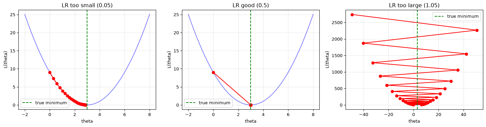
Adam vs SGD on a narrow valley (Rosenbrock function)
def rosenbrock(x, y): return (1 - x)**2 + 100 * (y - x**2)**2
def rosenbrock_grad(x, y):
dx = -2*(1 - x) - 400*x*(y - x**2)
dy = 200*(y - x**2)
return np.array([dx, dy])
def optimise(start, lr, n_steps, optimiser='sgd'):
theta = np.array(start, dtype=float)
path = [theta.copy()]
m = np.zeros(2); v = np.zeros(2)
b1, b2, eps = 0.9, 0.999, 1e-8
for t in range(1, n_steps + 1):
g = rosenbrock_grad(*theta)
if optimiser == 'sgd':
theta = theta - lr * g
elif optimiser == 'momentum':
m = 0.9 * m + g
theta = theta - lr * m
elif optimiser == 'adam':
m = b1 * m + (1 - b1) * g
v = b2 * v + (1 - b2) * g**2
mhat = m / (1 - b1**t); vhat = v / (1 - b2**t)
theta = theta - lr * mhat / (np.sqrt(vhat) + eps)
path.append(theta.copy())
return np.array(path)
paths = {
'SGD (lr=0.001)': optimise([-1.5, 2.0], 0.001, 2000, 'sgd'),
'Momentum (lr=0.001)': optimise([-1.5, 2.0], 0.001, 2000, 'momentum'),
'Adam (lr=0.1)': optimise([-1.5, 2.0], 0.1, 2000, 'adam'),
}
xg = np.linspace(-2, 2, 300); yg = np.linspace(-1, 3, 300)
X, Y = np.meshgrid(xg, yg); Z = rosenbrock(X, Y)
fig, ax = plt.subplots(figsize=(9, 6))
ax.contour(X, Y, Z, levels=np.logspace(-1, 3.5, 30), cmap='gray', alpha=0.5)
ax.scatter([1], [1], marker='*', s=200, c='green', label='global min (1, 1)')
for name, path in paths.items():
ax.plot(path[:, 0], path[:, 1], label=name, lw=1.5, alpha=0.8)
ax.set_xlim(-2, 2); ax.set_ylim(-1, 3)
ax.set_xlabel('x'); ax.set_ylabel('y')
ax.set_title('Optimisers on Rosenbrock — a classic narrow-valley test')
ax.legend(); plt.show()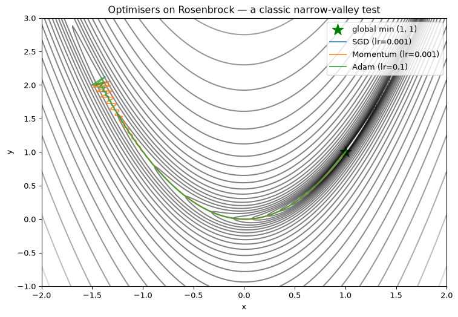
Batch vs mini-batch vs SGD — noise level
# Synthetic linear regression
np.random.seed(0)
n = 200
X = np.random.randn(n, 5)
w_true = np.array([1.5, -2.0, 0.5, 3.0, -1.0])
y = X @ w_true + 0.5 * np.random.randn(n)
def train(batch_size, epochs=30, lr=0.01):
w = np.zeros(5)
losses = []
for epoch in range(epochs):
perm = np.random.permutation(n)
for i in range(0, n, batch_size):
idx = perm[i:i+batch_size]
xb, yb = X[idx], y[idx]
grad = 2 * xb.T @ (xb @ w - yb) / len(idx)
w = w - lr * grad
losses.append(np.mean((X @ w - y) ** 2))
return losses
plt.figure(figsize=(9, 5))
for bs, name in [(200, 'batch (200)'), (32, 'mini-batch (32)'), (1, 'SGD (1)')]:
losses = train(bs)
plt.plot(losses, label=name, alpha=0.7)
plt.xlabel('update step'); plt.ylabel('training loss')
plt.title('Batch size vs gradient noise')
plt.yscale('log'); plt.legend(); plt.grid(alpha=0.3)
plt.show()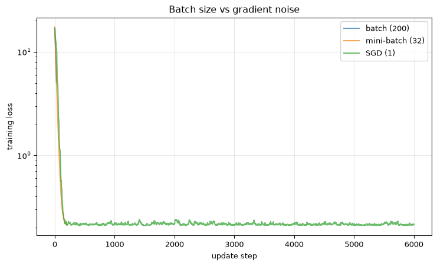